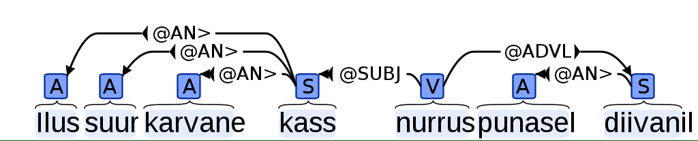

Estnltk has a wrapper for Estonian dependency parser, which tags syntactic and dependency markers every word. Make sure to check out the documentation.
from estnltk import Text
from pprint import pprint
text = Text('Ilus suur karvane kass nurrus punasel diivanil')
text.tag_syntax()
pprint(text['words'])
The above example adds new attribute syntax to every word, which is a list. The list usually contains only one element, but in case if ambiguity, there can be more. Ever list element has four attributes:
This is the output for the word ilus in above example:
'syntax': [{'form': 'A pos sg nom cap',
'intermediate': [],
'link': '#1->4',
'syntax': ['@AN>']}],
The dependency graph is a better way to illustrate relations between every word:
